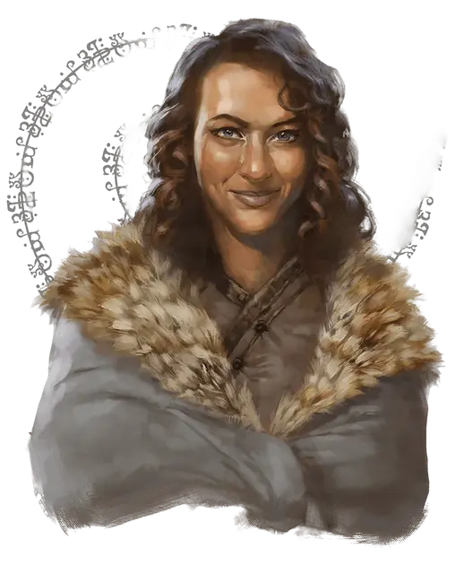

Белдора
Beldora
Средний Гуманоид (Человек иллюсканец), хаотично-добрый, именной НИП

Класс Доспеха 12
Хиты 18 (4к8)
Скорость 30 футов
| мод | спас | ||
|---|---|---|---|
| СИЛ | 10 | +0 | +0 |
| ЛОВ | 14 | +2 | +2 |
| ТЕЛ | 10 | +0 | +0 |
| мод | спас | ||
|---|---|---|---|
| ИНТ | 16 | +3 | +3 |
| МДР | 12 | +1 | +1 |
| ХАР | 16 | +3 | +3 |
Навыки Восприятие +3, Обман +5, Проницательность +3, Расследование +5, Убеждение +5
Чувства пассивное Восприятие 13
Языки Общий, Дварфийский, Драконий, Полуросликов
Опасность 0
Бонус мастерства +2
Особенности
Информация для отыгрыша. Белдора является Арфистом, который выживает при помощи своей ловкости и смекалки. Она выглядит как бездомная, но на самом деле её просто не интересуют материальное богатство.
Идеал. : «Мы все должны стремиться помогать друг другу.»
Привязанность:. «Я рискну своей жизнью ради защиты беспомощного.»
Слабость:. «Мне нравиться лгать людям. Это делает жизнь более интересной, разве нет?»
Действия
Короткий меч. Рукопашная атака оружием: +4 к попаданию, досягаемость 5 фт., одна цель. Попадание: 5 (1к6+2) колющий урон.
Ручной арбалет. Дальнобойная атака оружием: +4 к попаданию, дистанция 30/120 фт., одна цель. Попадание: 5 (1к6+2) колющий урон. Белдора носит с собой 10 болтов для арбалета.
Реакции
В укрытие. Белдора добавляет 2 к её КД против одной дальнобойной атаки, которая должна попасть по ней. Чтобы иметь такую возможность, Белдора должна видеть атакующего и не должна быть схвачена или опутана.